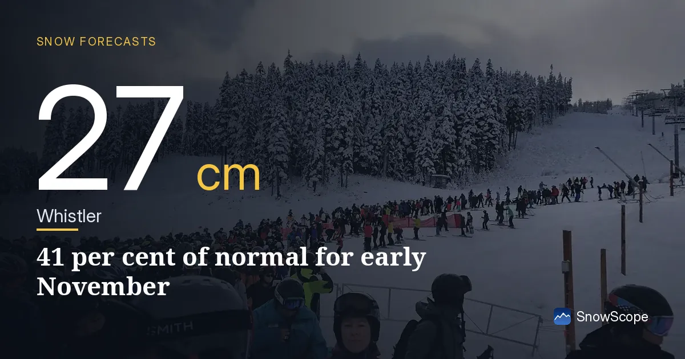
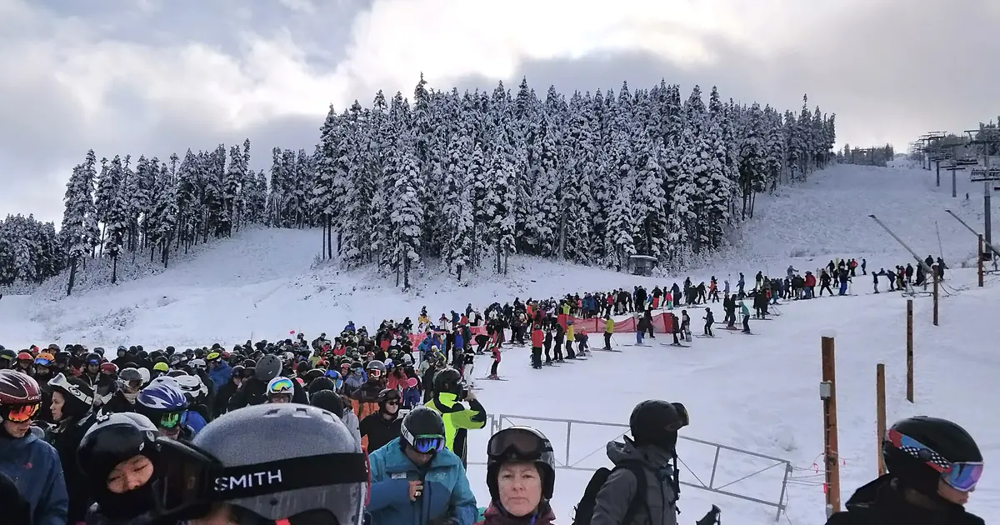
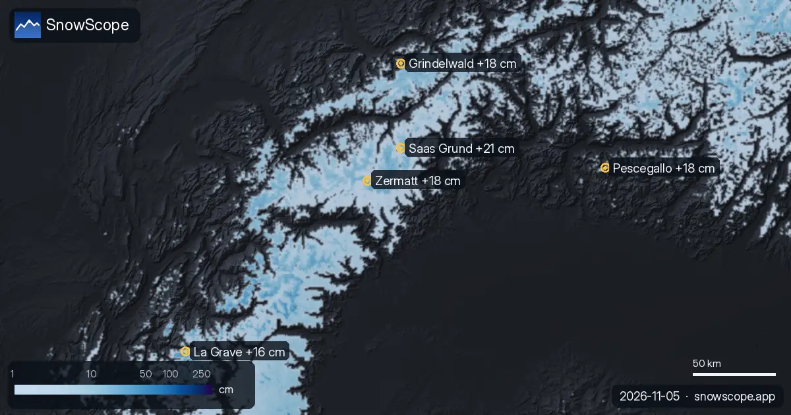

Whistler 27 cm: 41 per cent of normal for early November
Whistler Blackcomb is running 39 cm below normal for early November, with only 27 cm measured on 5 November against a typical 66 cm. A major storm system will reverse this deficit sharply, delivering 22 cm in the next 24 hours and 94 cm total through 8 November.
See the live snow forecast for Whistler Blackcomb in the SnowScope appSnow depth, powder alerts and the 3D map, free.
What the current deficit means
At 27 cm, Whistler's snowpack is running at just 41 per cent of its early-November average. This matters beyond ski conditions. Snow depth on high mountains is water stored above ground. This early deficit means less water will feed rivers and reservoirs through the winter melt cycle. The gap of 39 cm is significant—it represents a substantial volume of water if measured across the mountain's area. Such deficits in November can persist through the season unless systems like the one now arriving fill them in.
| # | Resort | Region | +24 h | +72 h | Snow line |
|---|---|---|---|---|---|
| 1 | Saas Grund | Alps · Switzerland | 14 cm | 21 cm | 2,300 m |
| 2 | Grindelwald | Alps · Switzerland | 14 cm | 18 cm | 2,000 m |
| 3 | Zermatt | Alps · Italy / Switzerland | 14 cm | 18 cm | 2,400 m |
| 4 | Pescegallo | Alps · Italy | 7 cm | 18 cm | 1,600 m |
| 5 | La Grave | Alps · France | 16 cm | 16 cm | 2,900 m |
| 6 | Arolla | Alps · Switzerland | 14 cm | 16 cm | 2,200 m |
| 7 | Engstligenalp | Alps · Switzerland | 14 cm | 16 cm | 2,000 m |
| 8 | Glacier 3000 | Alps · Switzerland | 13 cm | 16 cm | 2,200 m |
| # | Resort | Region | +24 h | +72 h | Snow line |
|---|---|---|---|---|---|
| 1 | Mt Baker | US West · United States | 4 in (11 cm) | 17 in (42 cm) | 9,200 ft (2,800 m) |
| 2 | Hurricane Ridge | US West · United States | 1 in (2 cm) | 5 in (13 cm) | 9,500 ft (2,900 m) |
| 3 | Mt. Hood Meadows | US West · United States | 0 in (0 cm) | 4 in (9 cm) | 11,500 ft (3,500 m) |
| 4 | Stevens Pass | US West · United States | 1 in (2 cm) | 3 in (7 cm) | 8,900 ft (2,700 m) |
| 5 | Crystal Mountain | US West · United States | 0 in (1 cm) | 3 in (7 cm) | 10,800 ft (3,300 m) |
| 6 | Tuckerman Ravine | US Northeast · United States | 0 in (0 cm) | 3 in (7 cm) | – |
| 7 | Sahalie Ski Club | US West · United States | 0 in (1 cm) | 2 in (6 cm) | 9,200 ft (2,800 m) |
| 8 | Saddleback Mountain | US Northeast · United States | 0 in (0 cm) | 2 in (5 cm) | 10,800 ft (3,300 m) |
| # | Resort | Region | +24 h | +72 h | Snow line |
|---|---|---|---|---|---|
| 1 | Whistler Blackcomb | Western Canada · Canada | 22 cm | 94 cm | 2,400 m |
| 2 | Ski Callaghan | Western Canada · Canada | 32 cm | 93 cm | 2,200 m |
| 3 | Tweedsmuir Ski Club | Western Canada · Canada | 37 cm | 70 cm | 1,200 m |
| 4 | Mount Cain Alpine Park | Western Canada · Canada | 8 cm | 54 cm | 2,300 m |
| 5 | Sasquatch | Western Canada · Canada | 1 cm | 20 cm | 2,600 m |
| 6 | Mount Washington Alpine Resort | Western Canada · Canada | 0 cm | 17 cm | 2,800 m |
| 7 | Manning Park Resort | Western Canada · Canada | 2 cm | 16 cm | 2,700 m |
| 8 | Purden Ski Village | Western Canada · Canada | 7 cm | 14 cm | 2,500 m |

The incoming event and its scale
Our forecast the forecast shows a major system will deposit 22 cm of new snow on Whistler's upper slopes in the next 24 hours, rising to 94 cm by 8 November. This is not a marginal event. The intensity is significant: within three days, the mountain will gain roughly 2.5 times its current depth. This single system will not fully erase the seasonal deficit, but it will make a strong start.

Western Canada dominates this system
Whistler is forecast to see substantial snow, but it is not the region's leader in this system. Ski Callaghan, also in British Columbia, will receive 32 cm in 24 hours and 93 cm total by 72 hours. Tweedsmuir Ski Club will see 37 cm in the first 24 hours and 70 cm total. Mount Cain Alpine Park will get 8 cm in 24 hours and 54 cm over three days. This system is concentrated in Western Canada. The Alps will also see snow—Saas Grund is forecast for 14 cm in 24 hours and 21 cm total—but far less. The US Pacific Northwest gets lighter totals still: Mt Baker expects 11 cm (4 in) in 24 hours and 42 cm (17 in) over 72 hours.

A hydrological perspective
From a hydrologist's view, snowfall timing and location affect water supply in coming months. The 27 cm measured on 5 November at Whistler is a point measurement; actual snow depth across the mountain varies with slope aspect and elevation. Early-season snow on coastal mountains typically compacts quickly into dense, water-rich layers—this converts efficiently to spring runoff. The deficit matters because delayed water storage compresses the melt season, affecting river flows and reservoir refill timing downstream.
What to watch and practical advice
Over the next three days, monitor how the snow line evolves. A higher snow line means more rain at lower elevations; a lower one means deeper accumulation on the peaks. Early-season snow loads on a thin base layer can trigger slides. Consult the official avalanche bulletin if you venture off-piste. Rocks and sparse ground are still visible at mid-elevations even after heavy falls, so stay aware of terrain hazards.
Tips for skiers
- Watch the snow line over the next 48 hours. If it stays near 2400 m, rain-on-snow is possible at mid-elevations and may compact existing cover.
- 94 cm is a forecast for upper slopes; lower terrain may see rain instead. Check where the 2400 m snow line sits at your chosen altitude.
- Early-season slides are common when heavy snow loads land on thin base layers. Consult the official avalanche bulletin if you venture off-piste.
- Rocks and sparse ground are still visible at mid-elevations even after this system arrives. Early-season snow is thin; stay alert to terrain hazards.
- The system runs Friday through Sunday (6–8 November). Most snow will fall Friday and Saturday; check lift and terrain opening status at your resort Saturday morning.
About these numbers
Resort snow depths are the deepest snow on the resort's upper slopes on the date shown; they are estimates for an area, not a measurement at one point. Forecasts can change. Always read the official avalanche bulletin before going off-piste.
Official avalanche bulletins: EAWS (Europe) · avalanche.org (US) · Avalanche Canada
Cite this report
For research, teaching or the press: the numbers and charts are free to reuse under CC BY 4.0 with this citation.
SnowScope (2026), Whistler 27 cm: 41 per cent of normal for early November, https://snowscope.app/blog/en/2026/11/where-most-snow-falls-next-72-hours-5-november-2026.html, accessed 2026-11-05
SnowScope (Atlas Labs). (2026, November 5). Whistler 27 cm: 41 per cent of normal for early November. SnowScope snow reports. https://snowscope.app/blog/en/2026/11/where-most-snow-falls-next-72-hours-5-november-2026.html
BibTeX
@misc{snowscope2026wheremostsnowfallsnext72,
author = {{SnowScope (Atlas Labs)}},
title = {Whistler 27 cm: 41 per cent of normal for early November},
year = {2026},
month = nov,
howpublished = {\url{https://snowscope.app/blog/en/2026/11/where-most-snow-falls-next-72-hours-5-november-2026.html}},
note = {Published 2026-11-05 10:27 UTC; accessed 2026-11-05}
}· CC BY 4.0 · Methods, data and tools →
Whistler Blackcomb: snow and temperature by height, this winter vs last (tools) →
Follow Whistler Blackcomb
Free: a message when fresh snow is coming, and the forecast every morning.
More snow reports

The Alps will see 21 cm of new snow at Saas Grund by 8 November. Forecast data from 5 November shows where and when snow falls across five key resorts.

Whistler Blackcomb leads the three-day snow forecast with 130 cm by 12 November. SnowScope tracks new snow across the Alps, US West and Western Canada on 9 November.

Mt Baker will receive 16.5 in (42 cm) of new snow through November 8, leading the US West, based on our model run on November 5.